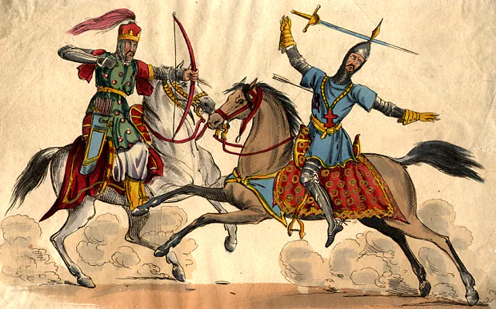
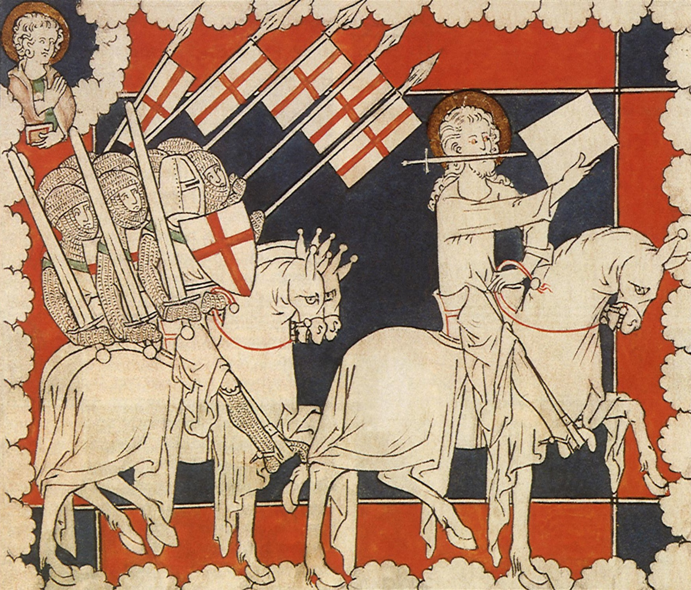
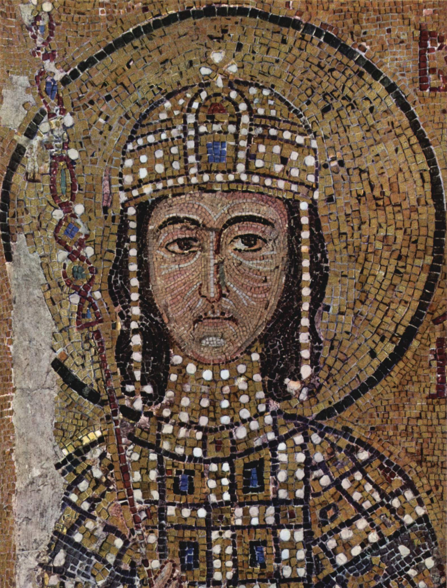
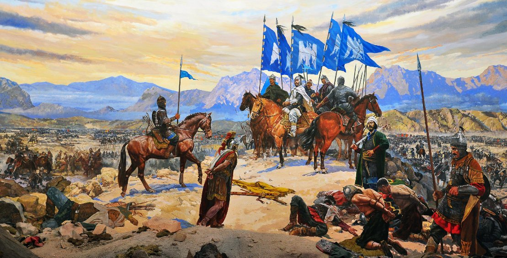
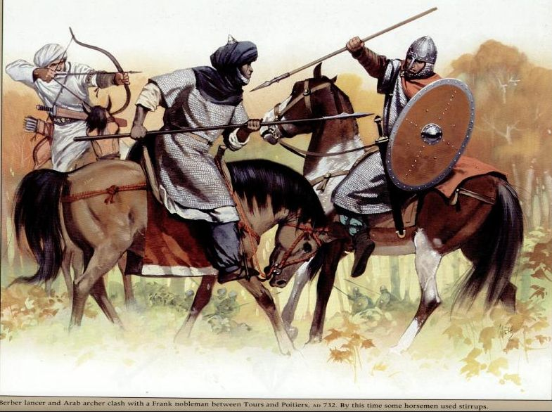

|
Doğu ve Batı Çarpışıyor Seferin TaraflarıBirinci Haçlı Seferi ilk bakışta basitçe bir Doğu ve Batı karşılaşması gibi görünebilir. Akıllarda canlanan bu görüntünün sebebi tabii ki de din faktörüdür. Bu savaşları devasa birer din savaşı gibi düşünmek kurgu açısından kulağa hoş geliyor olabilir fakat biraz daha detaya indiğimizde her tarihi olayda olduğu gibi bunda da işin bu kadar basit olmadığını görmüş olacağız. Haçlı seferlerinin her biri belirli siyasi ve kültürel amaçlarla ortaya çıkmıştır. Farklı kültürler, farklı mezhepler ve birbirine rakip siyasi yapılanmalar kendi menfaatlerini din faktörününün üzerinde tutarak kararlar almaya yatkındırlar. Bu nedenle doğu ve batı devletlerinin doğu ve batı olarak ayrılmadan aynı potada çekişmelere gireceklerini tahmin etmek çok da zor değildir. Lafı daha fazla uzatmadan seferi önemli dört taraf olarak özetleyelim ardından bu taraflardan ve amaçlarından bahsedelim. |
|
|

Müslüman savaşçı tarafından vurulan hristiyan hacı, Resim: Getty Images |
|
HaçlılarBizans İmparatoru I. Aleksios'un Batı'dan yardım istemesinin ardından Papa II. Urbanus 1095 yılında Haçlı ordularını toplamak adına vaazlara başladı. Birinci Haçlı Seferi'nde Haçlıların başlangıçta ne elde etmeye niyetlendiği hala tam olarak bilinmemektedir. Bu konuda geleneksel yorum, Haçlıların her zaman Kudüs'e gitmeyi ve Kutsal Hıristiyan toprakları'nı Müslümanların elinden almayı hedeflediğini söyler. Bunun yanı sıra, Katolik kilisesinin Bizans İmparatorluğu'na destek verirken ikinci bir amacı bulunduğu açıktır. Bu amaç ise, Ortodoks dünyasında bir şükran duygusu uyandırarak, Katolik-Ortodoks bölünmesini ortadan kaldırmak ve Hıristiyan alemini Papa'nın yönetiminde yeniden birleştirmekti. Birinci Haçlı Seferine çok sayıda ülke katılmaktaydı. Kara kuvvetlerindeki İtalyan sayısı pek az olmakla beraber İtalyanların sağladığı donanma desteği olmasaydı sefer muhtemelen başarıya ulaşamazdı. Kara ordusunun çoğunluğu piyadelerden meydana geliyordu. Pek çoğu tehçizat sahibi varlıklı köylülerdi. Askerlerin azınlıkta kaldığı bu orduda bazı birliklerin silahı bile yoktu. Esasında bu noktada Haçlı birliklerini "Köylü Haçlılar" ve "Esas Haçlılar" olarak ikiye ayırmak mümkün. Esas Haçlılar çok daha fazla tehçizat ve disiplin sahibi durumda iken aynı şeyi Köylü Haçlılar için söylemek pek mümkün değildir. İstanbul'a ulaşan haçlı ordusu toplamda en az 30,000 kişiden oluşuyordu. |
 İsa mesih haçlılara önderlik ediyor, Resim: British Library |
|  İmparator I. Aleksios Mozaiği, Resim: Ayasofya Müzesi/İstanbul |
Doğu Roma (Bizans) İmparatorluğuBizans ordusunun 1071'de Malazgirt'teki feci yenilgisine bir de iç savaşlar eklenince Türk aşiretleri Anadolu'nun büyük bölümüne hâkim olmuştu. İç savaşların sona erdikten ve Aleksios imparatorluk tahtını ele geçirdikten sonra, Bizans Imparatorluğu'ndan geriye her ne kalmışsa tek bir yönetim altında toplamaya çalıştı. Bizans Imparatoru I. Aleksios, Anadolu'da başlatmış olduğu yeniden fetih hareketlerini genişletmek ve kaybedilen bölgeleri yeniden almak için destek birliklerine ihtiyaç duyuyordu. Bizans'in kendi asker ve diplomatik cabalarinin Anadolu'da kaybedilen toprakları geri almaya yeterli olmadigina 1094 te kanaat getirdi. Batı Avrupa'daki Hiristiyan devletlerden destek istemeye karar veren Aleksios fikrini ertesi sene uygulamaya koydu. Bu, Birinci Haclı Seferi'ni baslatan olay olarak görülebilir. Anadolu'nun büyük kısmının kaybedilmiş olması Bizans İmparatorluğu'nu büyük bir asker kaynağından yoksun bırakmıştı. Bizans eyalet ordusu bu buhran döneminin ardından bir daha toparlanamamıştı. Bunun sonucunda Bizans ordusunda yabancı birliklerin sayısı yerli birlikleri aşmıştı. Bu yabancı birlikler kısaca Yunanca bilmeyen balkan kökenli askerler, Peçenekler ve Kuzeybatı Anadolulu bazı Türkler, İskandinav aristokrasisinden gelen Rhos'lar ve Batı Avrupadan gelen Normanlar şeklinde özetlenebilir. |
Türkler (Selçuklu Devleti)Haçlılarla başa çıkmaya yönelik kapsamlı bir planı olmayan Selçuklu Türkleri aslında Haçlı olayının ne olduğu konusunda da nereseyse hiç bilgi sahibi değillerdi. Sonuç olarak Selçuklu Türk eyaletleri istilalara birbirlerinden bağımsız şekilde karşılık verdiler. Esas Haçlı ordusundan önce gelen Köylü Haçlılar'ı yenen Sultan Kılıçarslan Esas Haçlı ordusunu da bu şekilde alt edebileceğibni düşündü. Kılıçarslan uğradığı yenilginin ardından Haçlıların gerçek niyetinin Kudüs'e gitmek olduğunu anlamış olacak ki Haçlı ordusunun topraklarından geçmesine izin verdi. Bu sayede Haçlılar'ın geçişinin ardından Bizans'la mücadele edecek gücü kalmış olacaktı. Dönemin Anadolu Selçuklu Devleti ordularını İran'daki Büyük Selçuklu Devleti gibi yapılandırmayı denemişti. O dönemlerde orduları çekirdeğinde küçük bir profesyonel devşirme birliğinden ve bu çekirdeğin çevresinde de Türk aşiret savaşçılarından meydana gelen bu ordular tahmini 10-15,000 asker büyüklüğündeydi. Bu devşirmeler Türk olabildiği gibi çok farklı kökenlerden gelenler de vardı. |
 Selçuklu ile Bizans arasında yaşanan Malazgirt savaşı çizimi |
|  Berberi mızrakçısı ve Arap okçusu, Frank soylusuyla çarpışıyor, Resim: Angus McBride |
FatımilerKahire'deki Fatımi yönetiminin aslında bir planı vardı, ancak bu plan, gerçekte olup bitenlerin son derece yanlış yorumlanmasına dayalıydı. Bizans yönetiminin Haçlıların İstanbul'a varışı ve harekatla ilgili ilk gelişmelere dair Fatımi Başveziri Efdal'i haberdar ettiği neredeyse kesin olarak bilinmektedir. Bu sebeple Fatımi yönetimi başlangıçta Bizans'ın yeniden fetih hareketi için geldiği düşünülen fakat asıl amaçları Kudüs'ü ve kutsal Hıristiyan topraklarını Müslümanlardan arındırmak olan Haçlıları Bizans ordusunun bir çeşit uzantısı olarak algılamış ve ortak düşman olduğunu düşündüğü Selçuklu Türklerine karşı önde gelen haçlı komutanlarıyla bir ittifak oluşturmak üzere girişimlerde bulunmuştu. Öyle ki Haçlılar Fatımi topraklarına girdiğinde bile bunları bir işgalci güç olarak görmemiş sadece etrafa zarar veren düzensiz ittifak kuvvetleri gibi algılamıştı. Fatımi yönetimi Haçlıların işgalci bir kuvvet olduğunu ancak Kudüs'e saldırdıklarında anlayabildi. |

| Birinci Haçlı Seferi | Taraflar Komutanlar Haçlı Seferi Kaynakça İletişim |